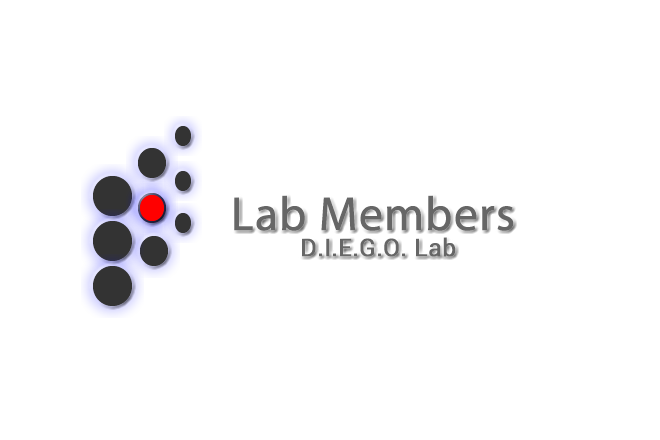

The D.I.E.G.O. Lab is a multifaceted and multidisciplinary lab, where members are selected from many domains and disciplines. Currently, the D.I.E.G.O. Lab members are broken down into the following categories:
Faculty
Post Doctoral Student(s)
PhD Student(s)
Masters Student(s)
Graduated Students